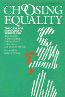

A comprehensive critique of education and the current reforms covering instruction and the institution
A comprehensive critique of education and the current reforms covering instruction and the institution


 A comprehensive critique of education and the current reforms covering instruction and the institution
A comprehensive critique of education and the current reforms covering instruction and the institution

|  |
Choosing EqualityThe Case for Democratic SchoolingAnn Bastian, Norm Fruchter, Marilyn Gittell, Kenneth Haskins and Colin Greer, foreword by James P. Comerpaper EAN: 978-0-87722-454-9 (ISBN: 0-87722-454-4) |
Eli M. Oboler Memorial Award, American Library Association, 1988
Outstanding Book in Educational Studies, American Educational Association, 1987
"I know of no treatise that more boldly exposes the most acute problems today confronting American education. Choosing Equality resonates with a call for national declaration of inter-dependence, for full recognition that if our public schools are to serve any child well, they must serve all children well."
—Mary Hatwood Futrell, National Education Association
The product of a two-year project developed by the New World Foundation, these essays present a comprehensive critique of education and the current reforms covering instruction and the institution as well as policy and politics.
Ann Bastian is a program associate at the New World Foundation and also a college teacher and labor analyst.
Norm Fruchter is an education consultant and a school board member of Community School District 15 in Brooklyn, New York.
Marilyn Gittel is Professor of political science at the Graduate Center, City University of New York.
Kenneth Haskins is Co-director of the Principals Center of the Graduate School of education, Harvard University.
Colin Greer is President of the New World Foundation and an education historian.
© 2015 Temple University. All Rights Reserved. This page: http://www.temple.edu/tempress/titles/419_reg.html.